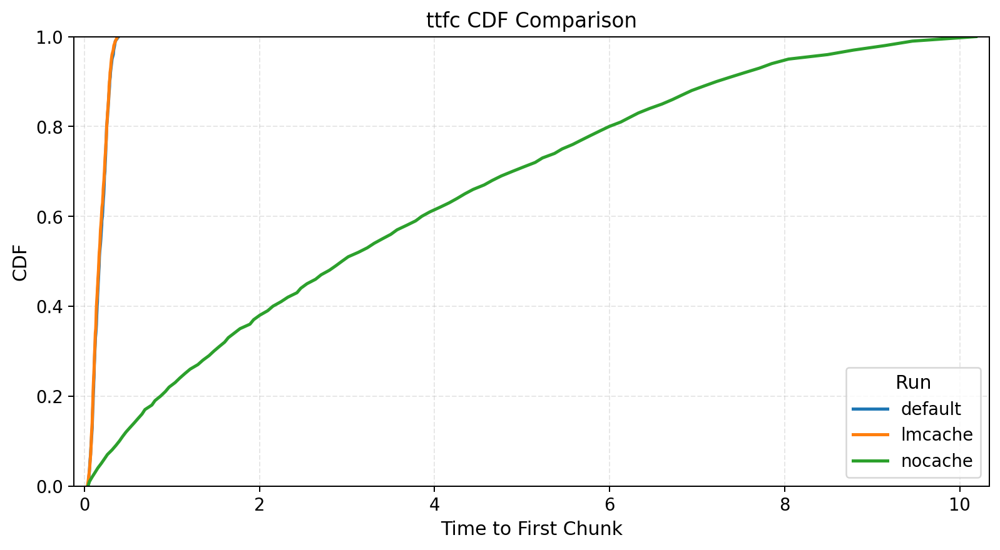
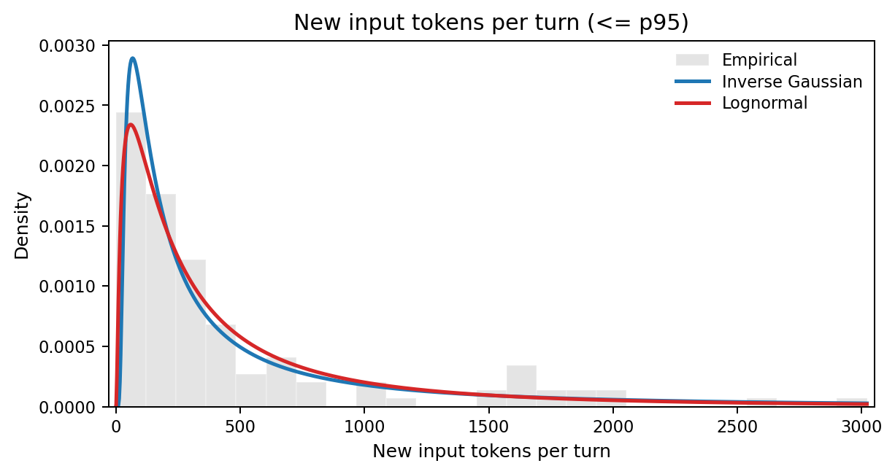
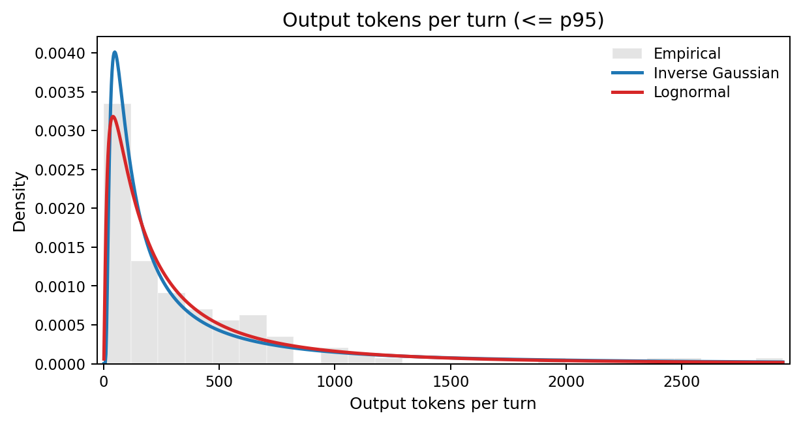

Agentic Workloads for Inference Evaluation
Why simple chat benchmarks are not enough, and how to model agentic workloads instead; through the lens of inference performance evaluation.
Introduction
The evaluation problem
Inference systems have a large configuration space. New optimizations ship very fast, and each one interacts with others in ways that are hard to predict. To know whether a configuration is good or not, you test it. To compare inference systems against each other, you test them under the same conditions.
Common popular inference benchmarking projects do this: nightly benchmarks across systems, telling you which is fastest or most efficient, giving you the most bang for your buck. But when we say one system is "better" or "worse", in what context do we mean? Artificial Analysis and InferenceX are useful examples of this benchmarking style. An inference system might be excellent at bursty, short-context workloads, while subpar at long-context ones. Another might shine with quantized models on specific hardware. The definition of "good" depends entirely on the workload. For us to test an inference system before deployment, we need to understand how it behaves under representative workloads.
However, inference systems are complex scheduling software, which makes reasoning about how a workload interacts with all of the relevant components or optimizationsfor example, what are the engine's policies for KV cache management or prefill and decode scheduling? really not straightforward. So we usually simplify. Common benchmark policies are to run independent requests or, at most, linear conversations: I send a message, the model responds, I append the response to the history, send another. Maybe we can also have a few conversations running in parallel.
And even though simple workloads are useful for that same reason and because they let us isolate variables, they might not be testing the whole range of interactions between components of the inference system. The reader might even let me make this analogy: simple workloads are unit tests, while agentic workloads are integration tests.
The workload gap
This means that there is a growing disconnect between what we benchmark and what runs in production. Many prominent LLM applications today are agentic systems rather than simple chatbots. OpenClaw and Claude Code run sessions with parallel tool calls, growing context and sub-agent delegation (see OpenClaw sub-agents and Claude Code subagents). The workload they place on an inference system looks nothing like a linear conversation or independent random requests.
How an inference system handles linear requests versus agentic sessions; these are completely different regimes. Agentic workloads stress prefix caching across long sessions, memory management under bursty traffic, scheduling fairness when sessions have wildly different context sizes. None of this shows up in simple benchmarks. Evaluating on the wrong workload means wrong conclusions, and wrong conclusions might cost you real money.
Why not just run a real agent?
So, when we want to fully evaluate the performance of an inference system, we don't just want to test it against the simple, traditional workloads, but also against agentic ones. Naively, we might think: just run OpenClaw against the inference system, give it some tasks, measure the timings. This does not work for rigorous evaluation, though:
- Reproducibility. LLM outputs are non-deterministic. The same task produces different tool-call sequences on different runs. The workload itself changes between experiments, making A/B comparisons impossible.
- Control. You cannot isolate variables. Want to test what happens when fan-out increases from 2 to 8, or when think time between requests grows? With a real agent, you cannot control that. With a benchmark framework, you change a parameter.
- Instrumentation. A benchmark framework measures what you need. Time to first token, time between tokens, cache hit rates, at the right granularity, without instrumenting someone else's code.
What we want is to replicate the shape of agentic workloads. The structure, the timing, the distributions, without running an agent. A benchmark framework that generates these workloads programmatically and consistently.
What this post does
To build such a benchmark, we first need a description of agentic workloads that is general enough to apply across implementations, but still precise enough to predict what an inference system sees. We do not really care whether "the agent writes code" or "searches the web". We care about the trace model: a graph of inference requests, their input and output lengths, how much prefix each request shares with the previous one, and how much time passes between dependent requests.
We use OpenClaw as a reference, an open-source agentic system with broad adoption (and hype)We use it not only because we can read the source: it's also representative with sub-agent spawning, parallel execution, context management, and more. The principles we extract apply to many agentic systems like Claude Code, because they share the same high-level execution patterns of tool use, result appending, and subagent delegation (see Claude Code subagents).
Each principle corresponds to one part of this statistical description: request-graph topology, prefix reuse, incremental input size, inter-request timing and input and output-length heterogeneity. For each, we connect the trace statistic to the inference system in two ways. First-order consequences are direct changes in work: more prefills, more decode tokens, larger fresh-token tails, or more concurrent sessions. Second-order consequences are what those first-order changes do to cache retention, scheduling, fairness, batching, and memory pressure. We aim to present:
- How to describe agentic traces statistically: as session graphs plus distributions over token counts, waits, shared prefixes, and branching.
- How to replicate them in a benchmark: by measuring those distributions from real traces and generating matching synthetic sessions.
- Why it matters: inference systems behave differently under agentic load, and evaluating on the wrong workload might not give you the full picture.
Throughout, Veeksha is the framework we use to instantiate and measure these workload models in the experiments.
Prerequisites
Before we get into OpenClaw, let's set up our shared vocabulary and execution model. If you work with inference systems, this will be familiar; if you don't, this will be a quick overview.
Inference basics
An inference system handles user requests. When a request arrives, the system computes and saves the keys and values of the input tokens: the prefill. Then, it generates output tokens one at a time: the decode. In practice, the system deals with many concurrent requests, carefully managing scheduling, CPU/GPU overlap, memory management, etc. All optimizations on top of this, like advanced KV-cache policies, chunking, prefill-decode disaggregation, speculative decoding, and more, are generally strategies to make the prefill, decode, or both faster or more efficient under concurrency (see PagedAttention, Orca, and DistServe).
Measuring inference performance
When we evaluate an inference system, we care about how fast it does prefills and decodes across a workload.In this post we focus on text-only requests because most agentic workloads as of time of writing are text-only, but requests can also be multimodal i.e. with images or audio, and the metrics which we care about would change in that case. The core metrics are:
- TTFT: time to first token. How long until the first output token arrives after submitting a request. Measures prefill speed.
- TBT: time between tokens. The interval between consecutive output tokens. Measures decode speed.
- TPOT: time per output token. Mean TBT across a request.
- E2E latency: total time from request submission to last output token.
- Throughput (token or request): Often measured as tokens per second (tokens processed / e2e latency), but can also mean requests per second being handled by the system.
Everything else, like cost per token or energy per token, derives from these plus hardware and pricing data. We can measure TTFT and TBT because modern inference APIs stream tokens back, so we can observe each one as it arrives. Some systems batch output tokens into chunks for efficiency, so we actually prefer TTFC (time to first chunk) and TBC (time between chunks) instead for agnostic evaluation.As of now, inference systems report streaming information differently, and there isn't a standard way of seeing the number of output tokens in output chunks. Counting the number of tokens in a chunk accurately is not always possible due to tokenization mismatches. Same idea but slightly coarser (see, for example, OpenAI streaming responses).
What is a session?
Throughout this post, we use the term session rather than conversation. A conversation is always linear: user, assistant, user, assistant. A session is the generalization. That is, a graph of requests with dependencies.
In this framework, an independent request is a session with one node. A linear conversation is a session where nodes form a chain, one after the other. An agentic session can be a chain too, but it can also be a DAG: when an agent spawns sub-agents, each runs its own chain of inference requests in parallel. We are going to build up this graph structure piece by piece.
The agentic loop
Imagine we have an OpenClaw instance running. We are communicating with it via our preferred interface, having a back-and-forth conversation with it, and we ask it to perform a particular task. When the user message arrives, OpenClaw starts a loop comprised of several stages. We can roughly categorize each step as: Compose, Infer, Check, Execute and Append. First, it composes the new message from history plus new context and sends it to the LLM for inference. It checks if the LLM response was a final answer or if it decided to call tools first. For example, it might need to read a file, run a command, search the web. If so, the system executes the tool calls concurrently and appends all results to history. This loop usually repeats until the model decides it has completed the user's request.
def prompt(user_input, session):
session.history.append({"role": "user", "content": user_input})
while True:
# One LLM inference request
response = call_llm(
system=session.system_prompt,
tools=session.tool_definitions,
messages=session.history,
)
session.history.append({"role": "assistant", "content": response.content})
if response.stop_reason == "end_turn":
return response
# Make tool calls concurrently, then append results
results = await gather(
execute_tool(tc.name, tc.arguments) for tc in response.tool_calls
)
for tool_call, result in zip(response.tool_calls, results):
session.history.append({
"role": "tool_result",
"tool_use_id": tool_call.id,
"content": result.content,
})
# Loop back. Next iteration includes all tool resultsCode chunk 1: A typical agentic loop.
So, each iteration of this loop is one inference request. An important observation is that most tool calls (file reads, shell commands) do not involve any LLM calls: they execute locally and return text. Some tools do call models (image generation, LLM-backed web search), but those typically hit external APIs, not the inference system serving the main agent.For example, OpenClaw's web search can call Gemini, Perplexity, or other providers. These are external requests that just look like timing gaps from our inference system's perspective. This means a single session without sub-agents produces a linear chain of requests to the inference system under evaluation.
On top of this core loop, OpenClaw also has an outer loop that handles infrastructure failures: context overflow, auth rotation, thinking mode fallback. This outer loop does not change the steady-state of the workload, but there are some things we need to know about it. We will get back to it later.
This is the core of the agentic loop, and pretty much the basic structure of agentic systems. In the next section, we will treat the properties induced by this loop as trace statistics.
An agentic workload
Now that we know why agentic evaluations are important and are familiar with the basics of inference evaluation, what a session is, and how the agentic loop works, we can start characterizing an agentic workload.
For the purposes of inference evaluation, an agentic trace is a session graph whose nodes are inference requests and whose edges are dependencies. Each node carries quantities such as the number of input and output tokens, and each edge carries a delay and a history inheritance relationship. A benchmark does not need to replay exact tool semantics. It needs to reproduce the distributions of these quantities. The principles below are the dominant terms in that description. We extract them from real OpenClawTechnically, OpenClaw does not implement the agentic loop. According to the docs, it's a "... gateway for Pi agents". So we are actually talking about Pi agents running on OpenClaw. telemetry based on real sessions.All experiment results, extra visualizations and telemetry is available in the repo for this post.
1. Request expansion
The agentic loop in Code chunk 1 already gives us the first principle: one user task expands into a sequence of dependent inference requests. Most tool calls do not add requests directly to the evaluated inference system, but they do trigger another LLM call once their results are appended to history. A think-act-observe cycle can therefore turn one human request into many inference requests.
Statistically, the quantity we care about is not "user turns" but the distribution of inference requests per user task, or equivalently the depth of these dependency chains. In the trace underlying Case study 1: multi-turn sessions, 3 user interventions expand into 130 inference requests. In the near future, we can expect agentic loops to generate thousands of inference requests per user task.
The first-order consequence is that end-to-end latency compounds across many sequential prefills and decodes, not one. The second-order consequence is that the scheduler sees long-lived dependent chains rather than iid requests, which changes batching opportunities and how long session state remains live.
2. Stateful prefix reuse
In Code chunk 1, we can see how every inference request includes the full conversation history. The model needs to see everything that happened before to produce a coherent next step: all user messages, assistant responses, tool results and other content. Implementation-wise, this produces monotonic context growth. Statistically, the more fundamental quantity is prefix overlap between consecutive requests.
This means that each request in the chain is strictly larger than the previous one. Turn N's input contains everything from turns 1 through N-1, plus whatever new context was added. This means that every request is assembled as follows (approximate numbers for Pi agents):
[system_prompt] order of 10^4 tokens
[tool_definitions] order of 10^3 to 10^4 tokens
[message_history] grows with each turn
[new_input] latest user message, tool results and other contentWe can write an approximation of the input token count $n$ for turn N as:
$$n_N = S + D + \sum_{i=1}^{N} (U_i + A_i + R_i + X_i)$$where $S$ is the system prompt, $D$ the tool definitions, $U_i$ the user input at turn $i$, $A_i$ the assistant response, $R_i$ the tool results (zero if no tools were called that turn), and $X_i$ other content such as injected or synthetic history turnsFor example, subagent summaries that get injected into the parent's context. The key observation is not only that input grows, but that request $N$ and request $N+1$ share almost all of their tokens as N increases.
Why this matters for the inference system
This is arguably the dominant property of agentic workloads. The prefix overlapDefined as the ratio of the shared consecutive tokens, from the start, to the total tokens in the input. between consecutive requests is very large, and it can reach 90-99% of the input. In other words, request $N$ and request $N+1$ share almost all of their tokens. As the context horizon of LLMs grows, this overlap will tend to 100%.
On top of this, there is the constant scaffold that is the system prompt and tool definitions. This is an extremely high-value target for caching, as in most cases it's repeated across all requests and sessions.
The first-order consequence is on prefill work. An inference system that exploits this via prefix cachingPrefix caching means reusing the KV-cache computed for request $N$ when processing request $N+1$. Since the shared prefix is identical, the system only needs to compute KV entries for the new tokens. This turns prefill into an approximately constant-cost operation, but requires complex cache management. only needs to prefill the new tokens at each turn (see vLLM prefix caching). One that does not exploit it recomputes the entire growing history from scratch.
The second-order consequence is on cache policy. Once the workload is dominated by prefix reuse, cache placement, eviction, and offloading strategies start to dominate TTFT differences between systems that otherwise use prefix caching and the same model. If you evaluate an inference system on independent requests, where there is no prefix to cache, you never observe this regime.
Case study 1: multi-turn sessions
To make the workload regime concrete, we start from one real multi-turn coding trace and derive a simple synthetic workload from it.
- First, we ask OpenClaw 26.3.2 with GPT-5.1-Codex-Mini to implement a web app for interactive exploration of LLMs via interpretability methods. We cap the total inference time to ~15 minutes.Note that all numbers of trace characteristics in this post are probably going to be underestimating what power users and more advanced agentic harnesses generate.
- We measure statistical properties of the resulting trace: token counts, timings, prefix reuse, etc.
- We generate a synthetic workload from the trace that mimics the agentic pattern we just described.
- We compare that workload with and without prefix caching.
To run the benchmarks, we use Veeksha v0.2.2, an open-source benchmarking framework for LLM inference systems. It supports sessions as graphs of requests with dependencies, configurable timings, prefix caching simulations, replicating real-world workloads, microbenchmarks, and more.
Trace analysis
When the agent is stopped, we have an output OpenClaw trace that looks like this:
- 1 linear chain of inference requests
- 130 requests in total generated from 3 user interactions, an expansion factor of roughly 43x
- Median input and output length of 490 and 214 tokens, respectively.Means 1570 and 612, inflated by a few long-context requests. Every pair of requests is roughly the model deciding to call a tool and then observing the result. Interestingly, we do not see the model deciding to call a batch of tools at once.
- A median waiting time of 32ms between requests (after the previous request finished; mean of 6s, biased by my 2 slow interventions)
- A used context length of 117k tokens
- A total of 8.2 million token cache reads
The synthetic workload
We now have the first empirical parameters of the trace: chain depth, per-request token counts, wait times, and prefix reuse. Let us now measure the actual inference performance numbers with similar sessions. Here is how the configuration for the multi-turn workload approximately looks. We set numbers that approximate the above trace characteristics based on the medians. Take a moment to understand it, as it will help you understand the workload and the rest of the experiments.
# Q: how are sessions generated?
session_generator:
type: synthetic # synthetically, with a linear (chain) shape
session_graph:
type: linear
num_request_generator: # each session has between 100 and 150 turns
type: uniform
min: 110
max: 150
request_wait_generator:
type: poisson
arrival_rate: 0.032 # turns wait a mean of 32ms before being dispatched
channels: # each turn introduces between 400 and 600 new tokens from the user...
- type: text
body_length_generator:
type: uniform
min: 400
max: 600
output_spec: # ... and 150 to 250 new tokens from the assistant
text:
output_length_generator:
type: uniform
min: 150
max: 250
# Q: how are sessions dispatched to the inference system?
traffic_scheduler:
type: concurrent # with a concurrency-based scheduler...
target_concurrent_sessions: 1 # ...that allows one session at a time
# We dispatch 5 sessions in total
runtime:
max_sessions: 5
seed: 77 # seeded run!Code chunk 2: The synthetic workload configuration for the multi-turn sessions with prefix caching.
We run the above workload independently against two Llama-3.1-8B-Instruct replicas, each one running on vLLM 0.16.0 and a single H100 GPU. We override the maximum context length and set it to 128k. Replica A uses the default prefix cache configuration, while replica B has it disabled.
What is happening?
- Replica A: The system keeps prefix cache in GPU memory, and prefill compute times grow slowly with each turn.
- Replica B: The system has prefix cache disabled, and prefill compute times increase fast (often close to quadratic at long contexts) with each turn due to recomputation of KVs.

Figure 1: TTFC CDFs. With prefix caching: prefill times range from ~50ms to 0.35s. Without prefix caching: prefill times range from ~50ms to 10s.
Takeaway
Agentic workloads are long-lived, stateful traces with extremely high prefix reuse. Agentic sessions become dominated by prefix reuse and cache handling. Enabling prefix caching changes the latency profile; once that is true, other properties such as cache retention across idle gaps, eviction policy, offloading strategy, and scheduler behavior can become another source of performance differences.
3. Token-count heterogeneity
Prefix reuse does not mean the amount of new work per step is constant. At any point in an agentic loop, the model might append a small memory lookup, a medium shell output, a huge file read, or a large batch of tool results. There are other context-injection events too, like sub-agents sending summaries and artifacts to the parent agent. Similarly, the distribution of output tokens in an agentic workload is dictated by a variety of events. Many inference requests return small messages, where the model selects tools or acknowledges results. They usually stem from intermediate control events in the loop of Code chunk 1. Others, like turn ends, where models modify artifacts or respond to the user, or context overflows, where the model needs to compact the full history, generate large answers.
Statistically, the quantities that matter are the incremental input size between consecutive requests, that is, the number of fresh, non-cached tokens added on top of the shared prefix, and the number of output tokens generated per request.
In real agentic traces both distributions are broad and usually heavy-tailed. Most steps add a modest amount of tokens and generate short outputs, but a small number create very large bursts.

Figure 2: Empirical vs fitted distributions of new input tokens for the trace in Case study 1: multi-turn sessions. Cropped to 95th percentile (max value is around 20000 tokens). Most steps add just a few new input tokens, but a small number add very large bursts. I tested lognormal, Weibull, gamma, exponential, Pareto, normal and inverse Gaussian distributions, and found that the latter fits best.
This same observation also applies to the decode phase. In fact, performing the same fitting experiments on output tokens also yields the inverse Gaussian as the best fit for our empirical data in the multi-turn workload of Case study 1: multi-turn sessions.

Figure 3: Empirical vs fitted distributions of generated output tokens for the trace in Case study 1: multi-turn sessions. Cropped to 95th percentile (max value is around 14000 tokens). Same tested distributions as for the input tokens, and same best-fit.
The first-order consequence is that both prefill and decode work are heterogeneous across the trace rather than roughly constant per turn. Two requests with similar total context length can have very different prefill costs depending on how large the fresh tail is, and some generations are much longer than others. The second-order consequences are different for the two phases. Large fresh-token bursts create prefill interference: they occupy prefill capacity for longer, which can perturb batching and worsen tail latency for other sessions sharing the system. Long generations remain active for longer, which extends the lifetime of the KV and changes batch characteristics. Depending on the inference engine, this can affect metrics such as throughput, completion latency, TBT, or fairness under mixed workloads (see Orca, DistServe, and Sarathi-Serve).
For benchmarking, the direct consequence is that we should not model either side with smooth average increments per turn, or sample from uniform distributions. In Veeksha's spec (Code chunk 2), this means we change channels.text.body_length_generator and output_spec.text.output_length_generator from uniform to:
body_length_generator:
type: inverse_gaussian
mean: m
shape: s # controls dispersion, lower -> more heavy-tailedWhere:
mis ~815 for input tokens and ~615 for output tokenssis ~200 for input tokens and ~145 for output tokens
Prefix invalidation
In OpenClaw in particular, when the context length reaches its limit, there is a compaction event. The event creates a request asking the model to summarise, and then a new session is created with the summary as fresh context. This effectively invalidates the prefix of the original session.
We can model this event with the previous notes for prefill and decode heterogeneity, as it just creates moderately sized decodes (for summarisation) and prefill (new session with fresh summary), which fits in their heavy-tail description.
4. Bursty timing
Agentic systems are being provided with increasing ways to interact with the world. File read and write, program execution, API calls to other systems, computer use, and soon independent real-world + task navigation, we can consider them tool calls in our agentic loop of Code chunk 1. The idle time between subsequent requests in a session is dictated mainly by three factors:
- If user turn, how much the user takes to respond
- If tool turn, the nature of it. A test suite might take minutes, a file read might take tens of ms.
- Dispatch inefficiencies of the agentic system.
In the context of session graphs, we define the property wait_after_ready of a node (request) as the time between completion of the last parent request and the dispatch time of the node. If we take a look at its distribution in our sample trace, we see how almost 80% of the waits are less than 100ms, while the upper tail is heavy with 6% being larger than 10 seconds. This effect is similar to that of the input and output token distributions.
Again, this heavy-tail effect has implications beyond workload shape. During idle periods of a session, its KV state stays unused. This in turn increases the chance that, due to memory pressure and cache policies, at least a fraction of cache won't be resident by the time the next request of the session is dispatched. It will then have to pay a recomputation cost. This is not necessarily bad, as it might be the correct global decision; the point is that it creates a cache allocation trade-off, thus hurting other local properties.
Fidelity on synthetic workloads
While the empirical distribution of wait times roughly matches that of the tokens, a best-fit analysis tells us that it's actually not well described by a single, smooth distribution; a spike+tail description fits best. I measured another, arguably more complete and representative, trace and got similar results. So, does this mean that a benchmarking framework should include ways of sampling wait times according to complex spike+tail generators? I argue that with synthetic workloads, we care more about preserving clarity and the broad operational regime instead. An inverse Gaussian or lognormal distribution would do it.
If we care about absolute fidelity a better option is to replay traces, preserving every detail of the original workload instead of approximating it. This option is especially useful for those who already have a lot of production traffic.Veeksha can do this for a variety of trace types, like agentic ones directly from Claude Code or OpenClaw, while preserving the DAG, token and timing distributions of the workload.
5. Session branching
The session characteristics described until now have all been describing linear sessions. A big component of agentic workloads, though, is how agents can spawn subagents. Similar to how cells organised into specialised subsystems (organs) in nature, as agentic capabilities of models increase we will see further and further hierarchical delegation of work; each subagent focused on some particular task.
In practice, there are many ways to implement subagents and their reporting strategies.Should agents communicate across hierarchies? Only to their parents? Peers? In the case of the OpenClaw harness, the subagent flow is:
- Agent decides to spawn a subagent. It does so by calling the
sessions_spawntool, which asynchronously spawns a subagent. - Subagent starts with its own system prompt plus the task description from the parent as context. It does not inherit the full context.
- When finished, the subagent announces the results back to the parent. The parent receives a message with the subagent's output.
- Nesting depth (sub-subagents and more) and number of allowed spawns per agent are configurable, as well as max concurrency (see OpenClaw session tools and OpenClaw sub-agents).
In the context of the DAG that is an agentic session, this means that any node can have multiple children or parents. It isn't a linear chain anymore. Fan-out and fan-in degrees can be bigger than 1, which creates dependencies between requests in a way that we didn't have before. It also introduces context inheritance dynamics between nodes (not all nodes inherit the full history).
To illustrate this, we ask OpenClaw to produce a high-quality knowledge graph and analysis of all major AI frameworks. We nudge it to make use of subagents, each dedicated to researching some part of a particular framework. When we reach the OpenAI rate limit (~5 minutes), the session is:
- 575 requests total
- 35 sessions (spawns)
- ~3.2M total input tokens
- ~150k total output tokens
- 44 requests deep on the longest path
- 25 requests wide at the maximum width
- A max fan-in and fan-out degree of 2.
When building an agentic benchmark, we need to consider details such as branching factor, depth and length of child sessions and history inheritance ratios. It will directly affect the total pressure of the workload on the inference system's memory, compute and scheduling states.
Case study 2
We now compare two workloads of the same fresh token volume, but that differ in shape. Workload A is a sequence of short linear sessions, while workload B is a sequence of generic DAG workloads. They both have the same total number of new input and output tokens, so from the application's perspective they do the same amount of work. This does not imply identical inference work: the DAG workload may decode at longer effective context lengths and induce different cache reuse patterns. That distinction is intentional. The point is to show that, even under the same user-visible token budget, workload shape alone can change the reported performance of the system. We run them independently against the same, but fresh, system. Model and system are the same as in Case study 1: multi-turn sessions.
Matched fresh-token volume:
- linear: 5 requests. 500 in, 300 out. 30 sessions 5 = 150 reqs. Total new in: 150 500 = 75000 tok, total new out: 150 300 = 45000. Total theoretical cache: 30 ((500 + 300) * 10) = 240k.
- dag: 15 requests (3 linear dags each). 10 sessions * 15 = 150 reqs.
The full picture
TL;DR
We can now compress the whole argument into one workload model. A single agentic session is usually a DAG of parallel inference chains with partial history inheritance: one user task expands into many inference requests, consecutive requests share most of their prefix, fresh input and output sizes vary widely, waits are bursty, and occasional compaction events invalidate the prefix.
In shorthand:
- Request expansion: the think-act-observe loop turns one user task into a long chain of dependent requests.
- Stateful prefix reuse: full-history appends make consecutive requests share most of their prefix, though compaction or partial-history handoffs can reset or reduce that reuse.
- Token-count heterogeneity: tool results, summaries and final answers create broad fresh-input and output distributions, including compaction events that generate summary decodes and prefill restarts.
- Bursty timing: tool latency, user think time and dispatch overhead create broad
wait_after_readygaps. - Session branching:
sessions_spawnturns one chain into a DAG with fan-out, width and partial history inheritance, while repeated agent and subagent scaffolds create reuse opportunities across sessions.
Simple vs. agentic workloads: you need both
Simple workloads are useful to measure raw prefill or decode performance and isolate confounding variables. Agentic workloads reveal deeper effects in inference systems, like cache retention under bursty traffic, scheduling fairness under mixed concurrency, memory pressure from long-lived sessions, and the combined effects of request expansion, branching and prefix invalidation.
Conclusion
There are three main takeaways that I'd like the reader to take from this:
- Agentic traces are structured as session graphs plus distributions over token counts, waits, prefix reuse, invalidations and branching.
- We can benchmark them without running a real agent by measuring those distributions and generating synthetic sessions from them. Replaying traces is also useful.
- This matters because inference systems behave differently under agentic load, so the wrong workload can give the wrong conclusion.
Where to go from here
We use Veeksha here because it can express session graphs, replay traces, and generate synthetic workloads. If you want to try these ideas on your own inference system, the repository and documentation are a good starting point. Thank you for reading.